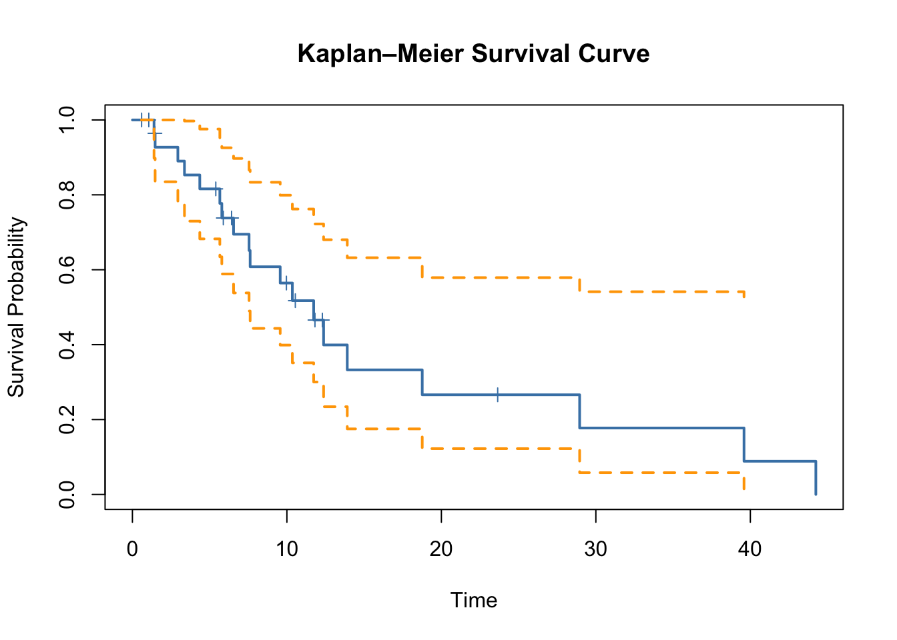

Survival Analysis
\(~\)
Supervisor: Tahani Coolen-Maturi
Project research area: Statistics
Background
Survival analysis, also known as failure time or lifetime analysis, is concerned with statistical methods for analysing time-to-event data, where the outcome of interest is the time until a specified event occurs. Examples include time until tumour recurrence, time until death following treatment, and time until failure of mechanical or engineering systems.
A key feature of such data is the presence of censoring, where the exact event time is not fully observed. This can occur, for example, when a study ends before all individuals experience the event of interest, or when individuals leave the study prematurely. These features distinguish survival data from standard types of data and require specialised statistical methods.
The central quantity of interest is the survival function
\[S(t)=P(T>t),\]
which represents the probability that the event has not occurred by time \(t\). Closely related is the hazard function, which describes the instantaneous rate at which events occur.
In practice, survival and lifetime data are analysed using a combination of nonparametric methods, such as the Kaplan–Meier estimator, and regression models, such as the Cox proportional hazards model. These methods allow for the comparison of groups, assessment of covariate effects, and prediction of future outcomes.
This project will introduce and explore the theoretical foundations and practical implementation of survival analysis, with an emphasis on understanding statistical methods and their application using the statistical software R.
Group project
The group project will focus on developing a solid understanding of the core concepts and methods in survival analysis through guided reading and discussion.
By the end of the group project you will have learned:
- Key concepts in survival analysis, including censoring, survival and hazard functions
- Nonparametric estimation methods such as the Kaplan–Meier estimator
- Regression models for survival data, including the Cox proportional hazards model
- Model assessment and diagnostic techniques
- Extensions and further developments in survival analysis
By the end of the group project you will be able to:
- Interpret and explain key survival analysis methods
- Implement basic survival analysis techniques in R
- Analyse and interpret time-to-event data
- Critically assess statistical models and results
Mode of operation and evidence of learning
The individual project will involve independent study, implementation in R, and data analysis. Students will demonstrate their understanding by developing and analysing statistical methods, applying them to simulated or real datasets, and clearly communicating their findings in both written and oral formats.
Individual project
The individual project will build on the knowledge gained in the group project and explore specific topics in greater depth. Possible topics include:
- Nonparametric survival analysis
- Cox regression models for survival data
- Parametric survival models and accelerated failure time models
- Competing risks models
- Censoring and lifetime data methods
- Frailty models and recurrent event data
- Time-dependent covariates
Mode of operation and evidence of learning
The individual project will involve independent study, implementation in R, and data analysis. Students will demonstrate their understanding by developing and analysing statistical methods, applying them to simulated or real datasets, and clearly communicating their findings in both written and oral formats.
Prerequisites
Statistical Inference; Data Science and Statistical Modelling
Further information
For more information, please contact me at: tahani.maturi@durham.ac.uk
References
- Survival analysis: Wikipedia
- Survival analysis: Part I, Part II, Part III, Part IV
- Collett, D. Modelling Survival Data in Medical Research, Chapman & Hall/CRC, 2015.
- Moore, D.F.F. Applied Survival Analysis Using R, Springer, 2016.
- Smith, P.J. Analysis of Failure and Survival Data, Chapman and Hall/CRC, 2002.
- Kalbfleisch, J.D., Prentice, R.L. The Statistical Analysis of Failure Time Data, Wiley-Blackwell, 2002.
- Lawless, J.F. Statistical Models and Methods for Lifetime Data, Wiley, 2003.
- Pintilie, M. Competing Risks: A Practical Perspective, Wiley, 2006.